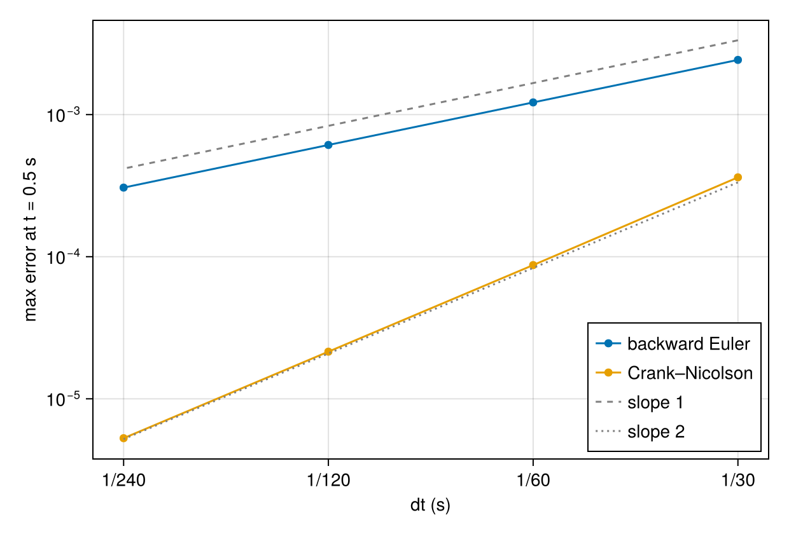
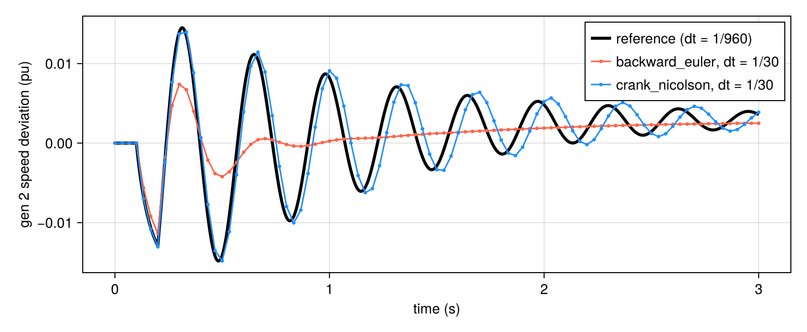

Integrators and Newton options
integrate! advances the DAE
\[\dot x = f(x, y, v), \qquad 0 = g(x, y, v)\]
with a fixed step dt (default 1/120 s, i.e. two steps per 60 Hz cycle). Every step is an implicit nonlinear system solved by Newton's method. You choose:
- the integration formula (
integrator); - how the Newton system is solved (
solver,linear_solver); - how much Newton work is reused (
jacobian_reuse,predictor).
None of these options change what is simulated, only accuracy and cost.
Backward Euler and Crank–Nicolson
integrator | formula on differential states | order |
|---|---|---|
:backward_euler (default) | $x_{k+1} = x_k + h\, f(z_{k+1})$ | 1 |
:crank_nicolson | $x_{k+1} = x_k + \tfrac{h}{2}\big(f(z_{k+1}) + f(z_k)\big)$ | 2 |
In both cases the algebraic equations hold exactly at every step.
- Backward Euler strongly damps fast modes. That makes it robust, but it also damps the electromechanical oscillations you may want to see.
- Crank–Nicolson preserves them much better. For the same accuracy it can take steps several times larger.
The error after 0.5 s of a smooth transient (a governor setpoint step), against a very fine reference:
using GradPower, CairoMakie
ex = joinpath(pkgdir(GradPower), "examples")
sys = from_psse(joinpath(ex, "ieee9_v33.raw"), joinpath(ex, "ieee9bus_gov.dyr"))
build_network!(sys); runpf!(sys)
dp = DynamicProblem(sys); initialize_dynamics!(dp, sys)
z0 = copy(dp.zvec); p0 = copy(dp.pvec)
ig = sys.dynamic.layout.ieesgo # +0.05 pu on every governor reference
for k in 1:ig.n
dp.pvec[Int(ig.par_ptr[k]) + 11] += 0.05
end
final(m, h) = (dp.zvec .= z0; integrate!(dp, sys, 0.5; dt = h, integrator = m)[2][:, end])
ref = final(:crank_nicolson, 1/1920)
hs = [1/30, 1/60, 1/120, 1/240]
err(m) = [maximum(abs.(final(m, h) .- ref)) for h in hs]
fig = Figure(size = (620, 420))
ax = Axis(fig[1, 1], xscale = log10, yscale = log10, xlabel = "dt (s)",
ylabel = "max error at t = 0.5 s", xticks = (hs, ["1/30", "1/60", "1/120", "1/240"]))
scatterlines!(ax, hs, err(:backward_euler), label = "backward Euler")
scatterlines!(ax, hs, err(:crank_nicolson), label = "Crank–Nicolson")
lines!(ax, hs, 0.1 .* hs, color = :gray, linestyle = :dash, label = "slope 1")
lines!(ax, hs, 0.3 .* hs .^ 2, color = :gray, linestyle = :dot, label = "slope 2")
axislegend(ax, position = :rb)
fig
Halving dt halves the backward-Euler error and divides the Crank–Nicolson error by four.
The difference shows up clearly through a fault on a coarse grid (dt = 1/30 s):
dp.pvec .= p0 # undo the setpoint step
add_event!(sys, ContingencyEvent(sys.busmap[7], 0.02, 0.1, 0.2))
w2 = GradPower.gen_speeds(sys)[2]
fig = Figure(size = (800, 330))
ax = Axis(fig[1, 1], xlabel = "time (s)", ylabel = "gen 2 speed deviation (pu)")
dp.zvec .= z0; t, r = integrate!(dp, sys, 3.0; dt = 1/960, integrator = :crank_nicolson)
lines!(ax, t, r[w2, :], color = :black, linewidth = 3, label = "reference (dt = 1/960)")
for (m, c) in ((:backward_euler, :tomato), (:crank_nicolson, :dodgerblue))
dp.zvec .= z0; t, r = integrate!(dp, sys, 3.0; dt = 1/30, integrator = m)
scatterlines!(ax, t, r[w2, :], color = c, markersize = 5, label = "$m, dt = 1/30")
end
axislegend(ax)
empty!(sys.dynamic.events)
fig
Backward Euler visibly damps the swing. Crank–Nicolson stays close to the reference even with only 4 steps per oscillation.
Crank–Nicolson cannot be combined with limit_method (TGOV1 valve limits), because the limit equations are formulated for backward Euler.
Newton: reuse and prediction
Each step solves F(z) = 0 with Newton iterations J Δz = -F. Two options, both on by default, cut the cost:
jacobian_reuse = truekeeps the factorized Jacobian across iterations and time steps (modified Newton). It refactors only when convergence slows, after an event, or after a failure. A step that fails with reuse is retried with full Newton, so reuse never makes a step fail.predictor = truestarts each step from the linear extrapolation2 z_k − z_{k−1}(not across events).
Both converge to the same newton_tol (default 1e-10), so the trajectories agree to that tolerance. SolverLog counts the work:
add_event!(sys, ContingencyEvent(sys.busmap[7], 0.02, 0.1, 0.2))
work = map([(true, true), (false, false)]) do (reuse, pred)
log = SolverLog()
dp.zvec .= z0
integrate!(dp, sys, 3.0; jacobian_reuse = reuse, predictor = pred, log = log)
(reuse = reuse, predictor = pred, residuals = log.residual_count,
factorizations = log.lsolve_factor_count)
end
empty!(sys.dynamic.events)
work2-element Vector{@NamedTuple{reuse::Bool, predictor::Bool, residuals::Int64, factorizations::Int64}}:
(reuse = 1, predictor = 1, residuals = 1770, factorizations = 83)
(reuse = 0, predictor = 0, residuals = 1125, factorizations = 763)On large systems, factorizations dominate the cost, so reuse is the main speed-up.
Solver structure
solver chooses how each Newton system is solved:
solver | method | when |
|---|---|---|
:monolithic (default) | sparse LU of the full Jacobian | general; supports limits |
:schur | eliminate each device cluster (dense, small), sparse LU of the reduced network system | large systems, GPU-style structure |
:schur_gmres | Schur reduction + GMRES preconditioned by the network admittance | experimental |
All three give the same trajectories (to Newton tolerance). The sparse factorization itself is chosen with linear_solver (see Linear solvers and GPU).
When Newton fails
If a step does not converge, integrate! throws a GradPower.NewtonConvergenceError with the time and the kind of solve. The system is restored even in that case. Typical causes are a zero-impedance fault, a collapsing voltage, or a dt far too large for the case.